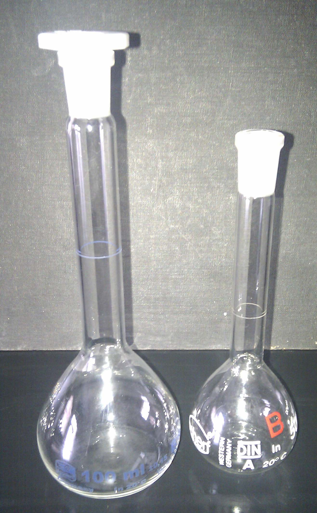

Formålet med dette kapitel er:
I kemi arbejder vi ofte med stoffer der er opløst i vand (eller andre opløsningsmidler). Vi har derfor brug for, et mål for hvor koncentreret opløsningen er. Den mest almindelige måde at angive dette på i kemi, er at angive hvor mange mol af stoffet der er opløst per liter opløsning. Denne størrelse kalder vi stofmængdekoncentration (eller lidt mindre præcist: koncentration) og betegner med et c. Enheden for stofmængdekoncentration er mol/L (mol per liter). Hvis vi fx har 2 liter (L) opløsning af salt i vand, hvor der i alt er 0,5 mol salt, så svarer det til at der er 0,25 mol salt i hver liter opløsning og vi kan skrive c = 0,25 mol/L.
Generelt har vi:
Den generelle sammenhæng mellem de tre størrelser, er:
.
Eksempel 1: Vi opløser 0,16 mol stof i vand, så opløsningen i alt fylder 0,5 L, hvad er stofmængdekoncentrationen?
Vi beregner: .
Eksempel 2: Vi skal bruge en stofmængde på 0,30 mol fra en opløsning med en koncentration på 0,25 mol/L, hvor stort et volumen skal vi bruge?
Vi beregner: .
Vi får til opgave at fremstille 0,5 L opløsning af natriumhydroxid (NaOH) med en stofmængdekoncentration på 0,25 mol/L.
Vi kan dele opgaven op i to dele: for det første skal vi have udført nogle beregninger for at finde ud af hvor meget stof (NaOH) vi skal afveje, for det andet skal opløsningen laves i praksis.
Beregningsdelen kan deles op i tre dele. Vi har opgivet V = 0,5 L og c = 0,25 mol/L.
1. Først beregnes stofmængden:
n = c·V = 0,25 mol/L·0,5 L = 0,125 mol.
2. Så beregnes stoffest molarmasse via det periodiske system, hvor vi kan finde molarmasserne for Na, O og H. Vi beregner:
M(NaOH) = M(Na) + M(O) + M(H) =(22,99 + 16,00 + 1,01) g/mol = 40,00 g/mol.
3. Massen beregnes:
m = n·M = 0,125 mol·40,00 g/mol = 5,00 g.
Vi har nu udført de nødvendige beregninger og kan gå over til det praktiske.
1. De 5,00 g NaOH afvejes på en vægt.
2. En målekolbe med et volumen på 0,5 L fyldes ca. en tredjedel med demineraliseret vand og stoffet (NaOH) overføres til kolben vha. en tragt.
3.Der sættes prop på kolben og den rystes til al stof er opløst.
4. Derefter fyldes op med vand til målestregen. Der sættes igen prop på og der rystes igen.
Bemærk at det er hele opløsningen der skal fylde 0,5 L, dvs. der bliver i alt brugt lidt mindre end 0,5 L vand (da NaOH også fylder lidt).

Enheden mol/L (mol pr. liter) er praktisk i kemi. I dagligdagen er det mere praktisk (og forståeligt) at bruge masseprocent. Vi kan regne om fra stofmængdekoncentration gennem tre skridt. Som eksempel siger vi at vi har natriumchlorid (NaCl) opløst i vand med en stofmængdekoncentration på 0,072 mol/L.
De tre skridt: